Healthy Teller Mockups
Oberflächen-Mockups zum Konzept. Jedes Bild öffnet den klickbaren Screen, die Screens sind untereinander verlinkt.
Alle Profile (Erika und Max Mustermann) und alle Zahlen sind erfunden. Werte aus den Mockups nie in Code, Regeln oder Tests übernehmen. Die Hinweistexte sind dagegen verbindlich und wörtlich zu übernehmen.
Start und Lebensmittel prüfen
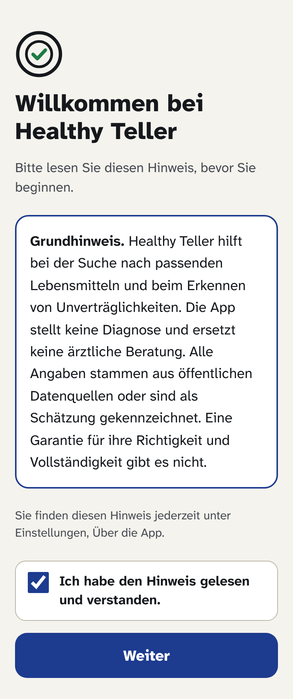
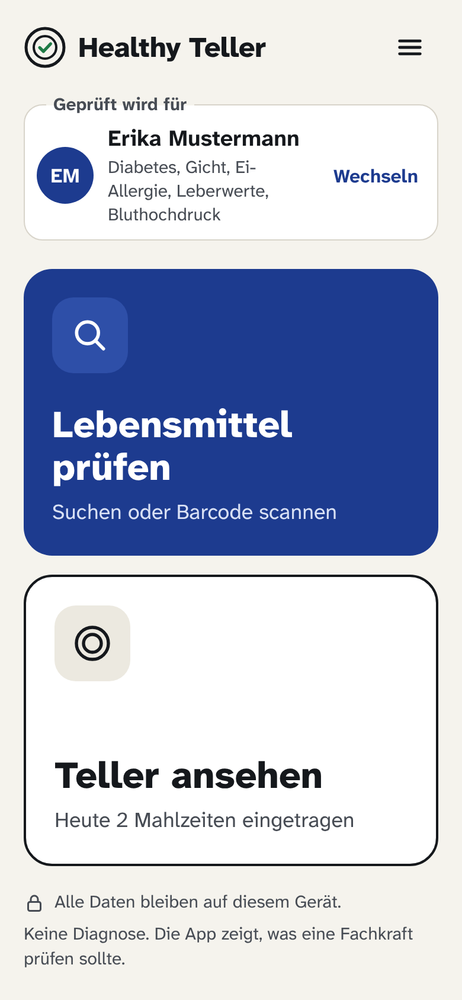
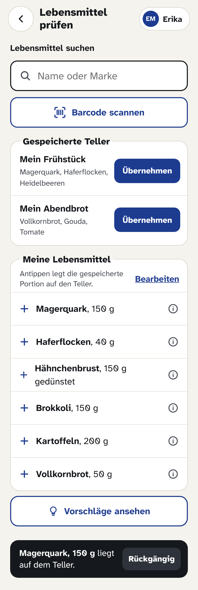
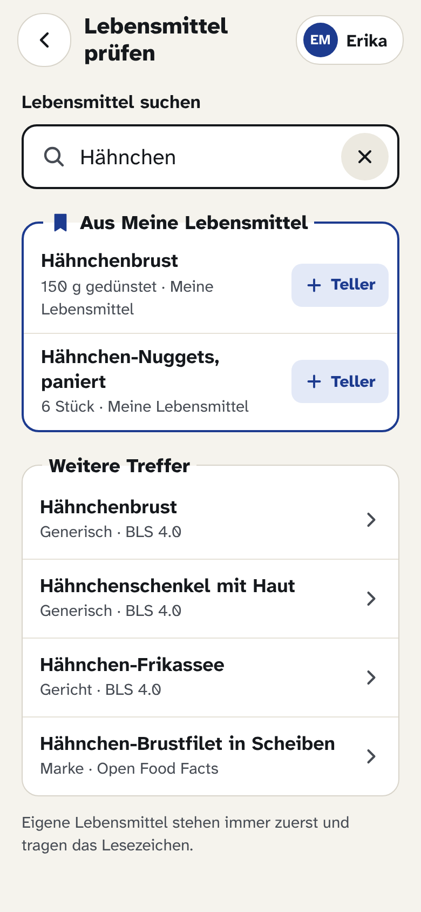
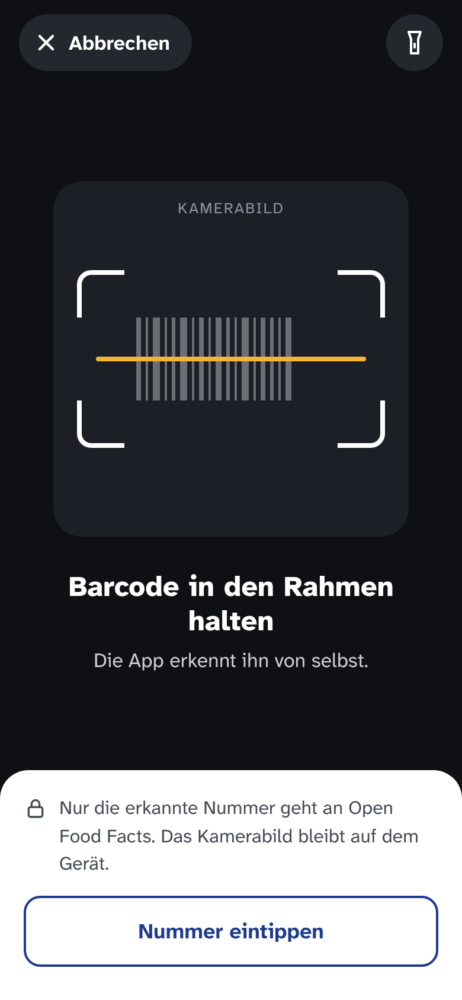
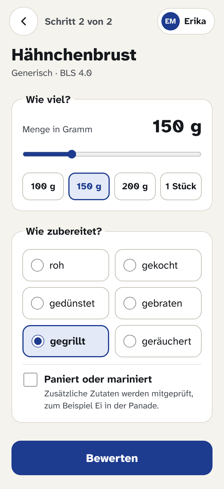
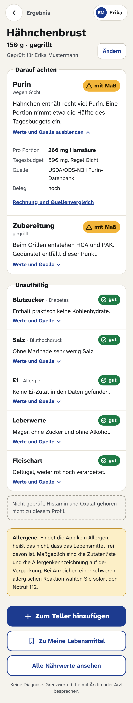
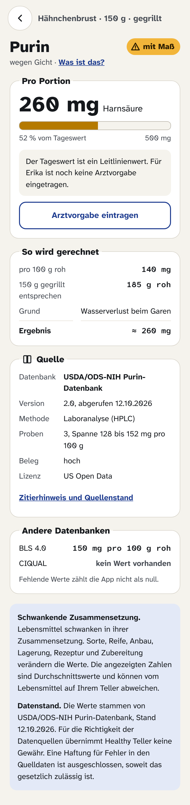
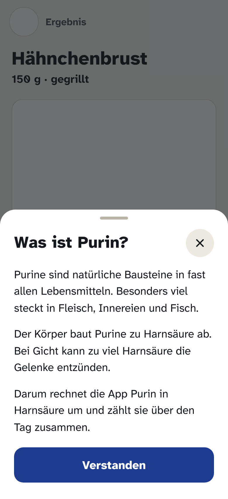
Nährwerte, Teller, Vorschläge, Meine Lebensmittel
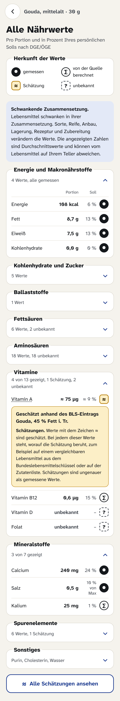
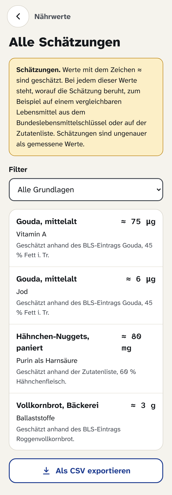
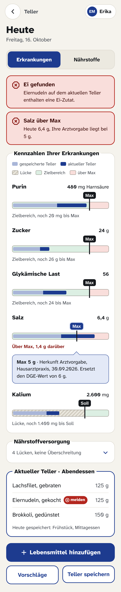
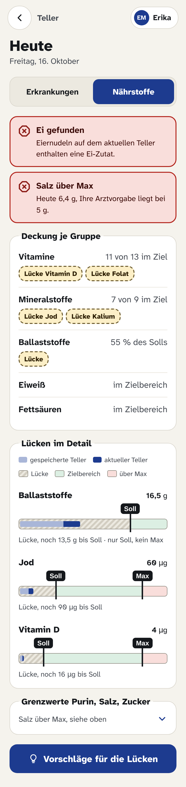
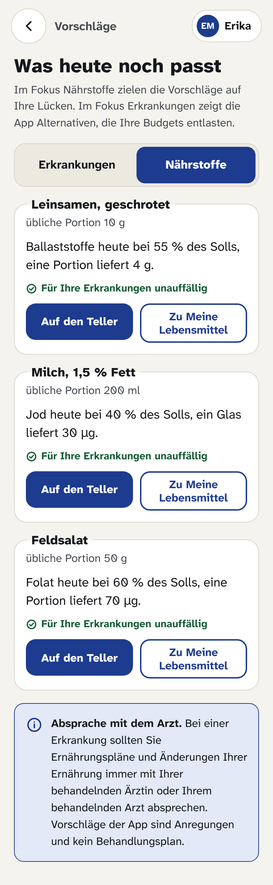
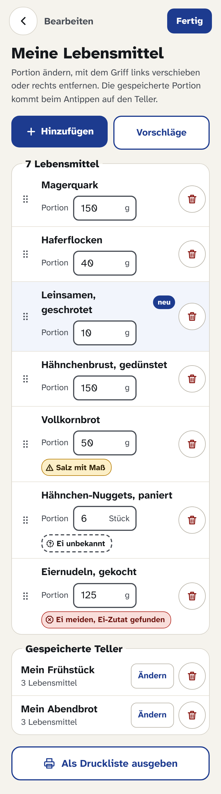
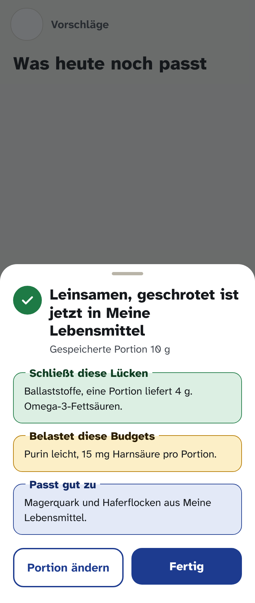
Profil, Einstellungen, Dunkelmodus
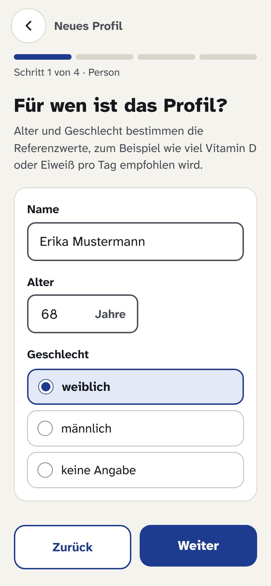
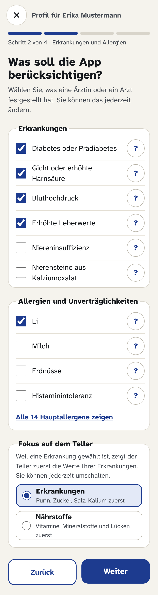
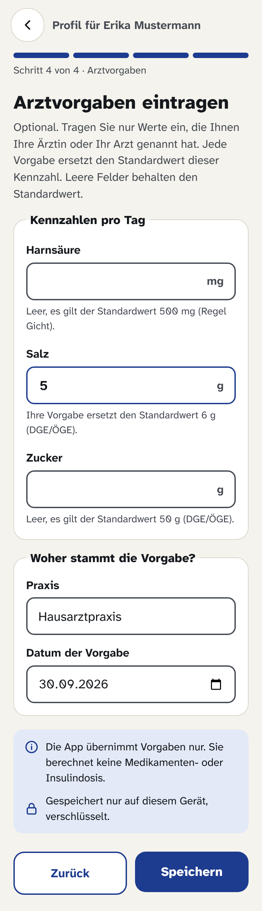
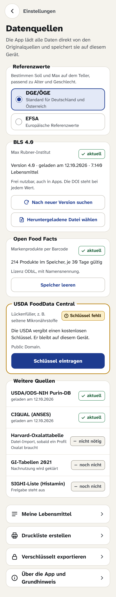
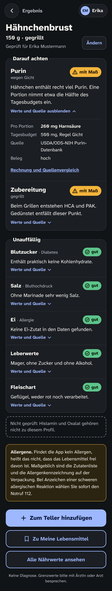
Druckliste und Ausbau
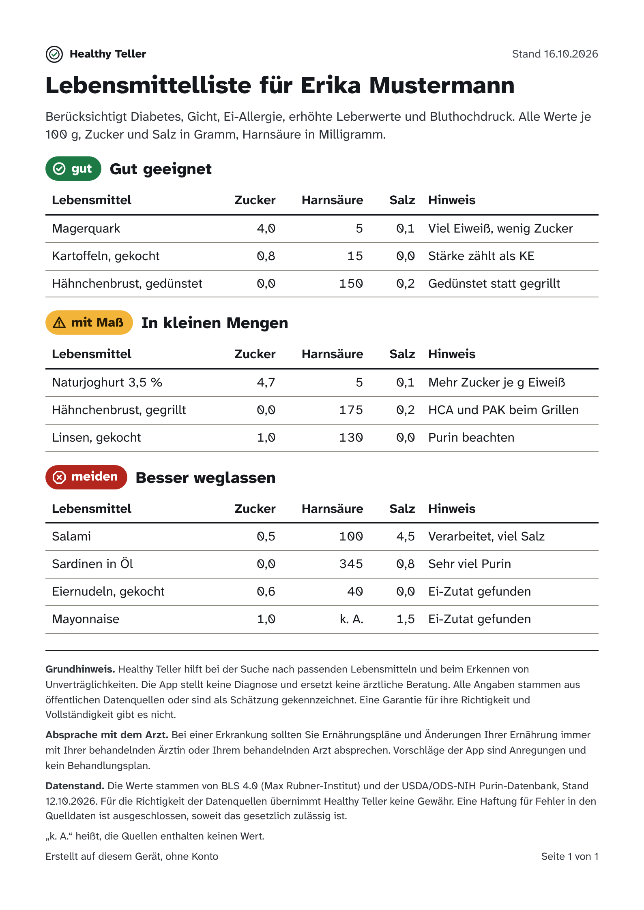
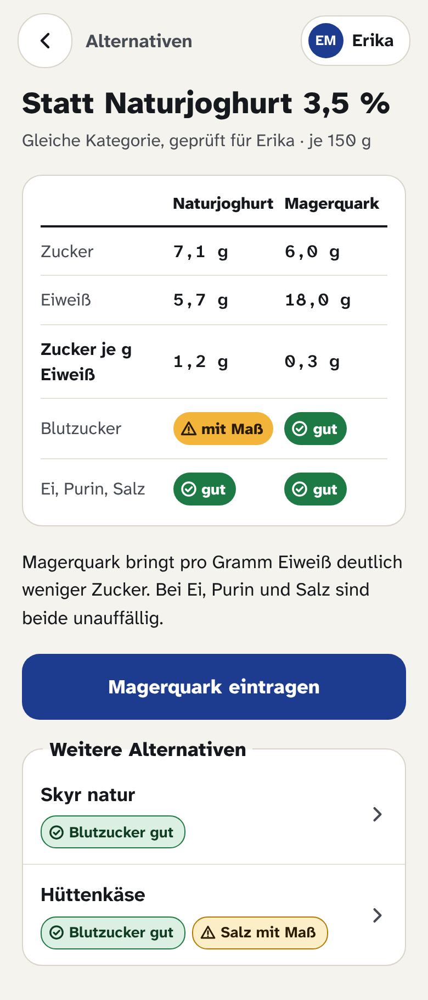
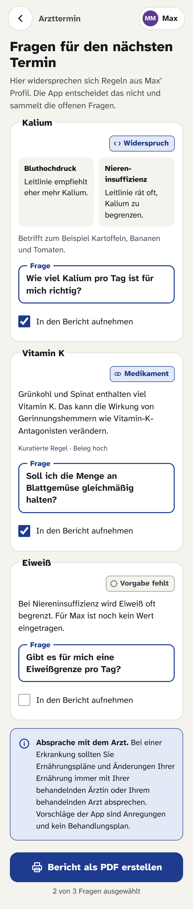